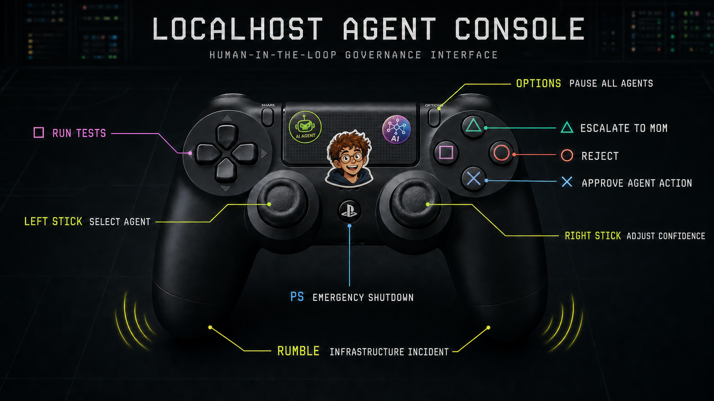

The PlayStation Became the Company.
A retired console, twelve parallel agents, and a governance interface Mom can understand.
The infrastructure bottleneck was Dad's iPad. Chad asked Prompt #42 how one tablet could run twelve AI agents in parallel. The answer was unusually direct: it could not.
The AI then identified a second computer sitting unused beneath the television. It had an x86 processor, eight gigabytes of unified memory, and an established nightly maintenance window whenever Chad was asleep.
“Unused enterprise compute discovered.”
The asset was still labelled PlayStation 4. Prompt #42 classified that as legacy branding and proposed a Linux migration. Mom approved the zero-dollar infrastructure expansion immediately. Dad requested clarification about who owned the television.
The final requirement was marked business-critical. Prompt #42 produced a rollback plan, a controller mapping, and a new enterprise product name before anyone had confirmed whether the console could actually boot Linux.


Linux boots. The company relocates.
When the prompt finished, the familiar console menu had been replaced by a
terminal. Chad declared the migration successful because the machine could
display the word production without assistance from Dad's iPad.
Approval is now a physical button.
Cross approves an agent action. Circle rejects it. Square runs the tests. Triangle escalates to Mom. The right stick adjusts confidence, which Martin noted is not how confidence should work.
Twelve panes achieve visibility.
Every agent received one pane and one company. All twelve began investigating
the same directory. Production officially moved from
localhost:3000 to behind the television.
-
1
Dad's iPad receives the parallel-agent requirements.
-
2
The unused compute is reclassified before consent can be established.
-
3
Production is now physically closer to the television.